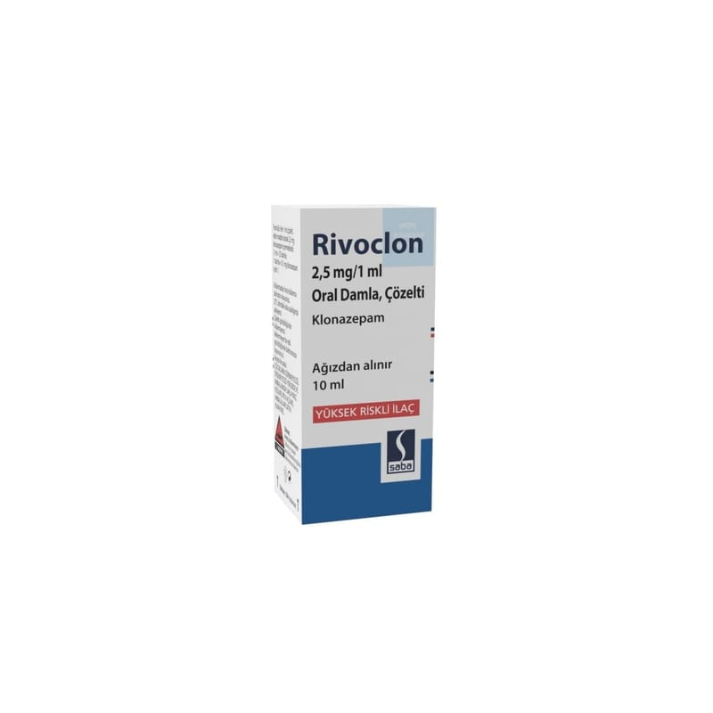

Rivoclon 2.5 mg/ 1 ml Oral Damla, ÇÖZELTİ,10 ml

Ne için kullanılır
KT · Bölüm 1• RİVOCLON etkin madde olarak her 1 mL çözeltide 2,5 mg klonazepam içerir. • RİVOCLON hafif sarımsı veya renksiz, şeftali aromalı berrak sıvıdır. RİVOCLON 10 ml amber renkli cam şişe içerisinde kullanıma sunulmuştur. RİVOCLON’un etkin maddesi klonazepam benzodiazepinler olarak adlandırılan bir ilaç grubuna dahildir. • R İVOCLON, bebeklerde, çocuklarda ve erişkinlerde epilepsi (sara) tedavisinde kullanılır. RİVOCLON hem geçirilen nöbet sayısını hem de geçirilen her nöbetin şiddetini azaltır.